<!DOCTYPE html>
<html lang="en">

<head>
  <meta charset="utf-8" />
  <meta name="viewport" content="width=device-width, initial-scale=1.0, maximum-scale=1.0, user-scalable=no" />

  <title>pallet-revive architecture</title>
  <link rel="icon" href="./../../assets/favicon.svg" />
  <link rel="shortcut icon" href="./../../assets/favicon.png" />
  <link rel="stylesheet" href="./../../dist/reset.css" />
  <link rel="stylesheet" href="./../../dist/reveal.css" />
  <link rel="stylesheet" href="./../.././assets/styles/PBA-theme.css" id="theme" />
  <link rel="stylesheet" href="./../../css/highlight/shades-of-purple.css" />

  <link rel="stylesheet" href="./../.././assets/styles/custom-classes.css" />

</head>

<body class="site">
  <header class="site-header">
    <!-- This logo is a link only on the watching server, not the production build -->
    <a href="">
      
    </a>
  </header>
  <main class="reveal">
    <article class="slides">
      <section  data-markdown><script type="text/template">

# pallet-revive architecture

<aside class="notes"><p>In this lecture we will cover the architecture of pallet-revive,
We will look at how the module works inside the substrate chain, as well as the EVM compatibility layer, that we built on top of it.</p>
</aside></script></section><section  data-markdown><script type="text/template">
## Architecture overview


<aside class="notes"><p>Before we dive int the details of how our pallet works, let&#39;s step back and look at the overall architecture of a substrate node</p>
<p>A node is essentially composed of 2 parts. The client and the runtime.</p>
<p>The runtime defines the business logic of our chain, it is compiled to WASM and it&#39;s code is stored on chain and can
get upgraded via runtime upgrade. The runtime is where we find our smart contracts module among other useful pallets.</p>
<p>The client is the Rust program that runs natively on your computer and handle all the general purpose blockchain administration tasks:
communicating on the p2p network, answering JSON-RPC requests, ordering, prioritizing and validating the transaction pool and managing the database</p>
</aside></script></section><section  data-markdown><script type="text/template">
## ETH-RPC compatibility layer


<aside class="notes"><p>To enable Ethereum compatibility, we need to speak the language of Ethereum.
This means implementing the Ethereum JSON-RPC API, which is the standard interface used by all Ethereum clients to interact with the chain.</p>
<p>To achieve this, we built a proxy server that sits between the Ethereum client and the Substrate node.
The proxy connects to the Substrate node via its JSON-RPC interface, subscribes to new blocks, and relays queries.</p>
<p>Additionally, it:</p>
<ul>
<li>Caches recent blocks to improve response time.</li>
<li>Maintains a lightweight database with indexes to track mappings between Ethereum transactions and their corresponding Substrate transactions.</li>
</ul>
<p>There have been multiple efforts to bring EVM compatibility to Substrate.</p>
<ul>
<li>Frontier integrates the Ethereum API directly inside the Substrate node.</li>
<li>Our approach decouples the Eth API by building it as a separate proxy layer, independent of the node.</li>
</ul>
<p>This present a few benefits:</p>
<ul>
<li>We can use the Omninode or any Substrate node implementation, if a Node operator decide to use a different Node
implementation they can do so as this approach require no modification to the Node.</li>
<li>We can iterate quickly on the compatibility layer, without having to wait for the Node to be updated.</li>
</ul>
</aside></script></section><section  data-markdown><script type="text/template">
## EVM flow



<aside class="notes"><p>Now, let’s examine the flow of a transaction from an Ethereum client to the Substrate node.</p>
<ul>
<li>A user signs and submits a transaction from an Ethereum wallet like MetaMask.</li>
<li>The proxy layer intercepts the transaction and wraps it into a pallet-revive runtime call, specifically an eth_transact call.
Different types of transactions in Substrate:<ul>
<li>Inherents – Unsigned transactions included by the block author.</li>
<li>Signed and unsigned transactions – Regular transactions submitted by users.</li>
</ul>
</li>
</ul>
<p>In our case, we submit the Ethereum transaction as an unsigned transaction.</p>
<ul>
<li>We define a custom implementation of the Checkable trait in Substrate, that recover the signer of the transaction
from the payload, and create a regular pallet_revive extrinsic out of it, with a signed origin and either an
instantiate_with_code or a call dispatch call</li>
</ul>
</aside></script></section><section  data-markdown><script type="text/template">
# pallet-revive

<aside class="notes"><ul>
<li>pallet-revive is the runtime module, that handle smart contracts transactions, and manage the storage used by these contracts.</li>
</ul>
</aside></script></section><section  data-markdown><script type="text/template">
## pallet-revive Config

```rust[0|32-48|69-87|104-122]
pub trait Config: frame_system::Config {
  /// The time implementation used to supply timestamps to contracts through `seal_now`.
  type Time: Time;

  /// The fungible in which fees are paid and contract balances are held.
  type Currency: Inspect<Self::AccountId>
    + Mutate<Self::AccountId>
    + MutateHold<Self::AccountId, Reason = Self::RuntimeHoldReason>;

  /// The overarching event type.
  type RuntimeEvent: From<Event<Self>> + IsType<<Self as frame_system::Config>::RuntimeEvent>;

  /// The overarching call type.
  type RuntimeCall: Parameter
    + Dispatchable<RuntimeOrigin = Self::RuntimeOrigin, PostInfo = PostDispatchInfo>
    + GetDispatchInfo;

  /// Overarching hold reason.
  type RuntimeHoldReason: From<HoldReason>;

  /// Used to answer contracts' queries regarding the current weight price. This is **not**
  /// used to calculate the actual fee and is only for informational purposes.
  type WeightPrice: Convert<Weight, BalanceOf<Self>>;

  /// Describes the weights of the dispatchables of this module and is also used to
  /// construct a default cost schedule.
  type WeightInfo: WeightInfo;

  /// Find the author of the current block.
  type FindAuthor: FindAuthor<Self::AccountId>;

  /// The amount of balance a caller has to pay for each byte of storage.
  ///
  /// # Note
  ///
  /// It is safe to change this value on a live chain as all refunds are pro rata.
  #[pallet::constant]
  #[pallet::no_default_bounds]
  type DepositPerByte: Get<BalanceOf<Self>>;

  /// The amount of balance a caller has to pay for each storage item.
  ///
  /// # Note
  ///
  /// It is safe to change this value on a live chain as all refunds are pro rata.
  #[pallet::constant]
  #[pallet::no_default_bounds]
  type DepositPerItem: Get<BalanceOf<Self>>;

  /// The percentage of the storage deposit that should be held for using a code hash.
  /// Instantiating a contract, protects the code from being removed. In order to prevent
  /// abuse these actions are protected with a percentage of the code deposit.
  #[pallet::constant]
  type CodeHashLockupDepositPercent: Get<Perbill>;


  /// Make contract callable functions marked as `#[unstable]` available.
  ///
  /// Contracts that use `#[unstable]` functions won't be able to be uploaded unless
  /// this is set to `true`. This is only meant for testnets and dev nodes in order to
  /// experiment with new features.
  ///
  /// # Warning
  ///
  /// Do **not** set to `true` on productions chains.
  #[pallet::constant]
  type UnsafeUnstableInterface: Get<bool>;

  /// Origin allowed to upload code.
  ///
  /// By default, it is safe to set this to `EnsureSigned`, allowing anyone to upload contract
  /// code.
  #[pallet::no_default_bounds]
  type UploadOrigin: EnsureOrigin<Self::RuntimeOrigin, Success = Self::AccountId>;

  /// Origin allowed to instantiate code.
  ///
  /// # Note
  ///
  /// This is not enforced when a contract instantiates another contract. The
  /// [`Self::UploadOrigin`] should make sure that no code is deployed that does unwanted
  /// instantiations.
  ///
  /// By default, it is safe to set this to `EnsureSigned`, allowing anyone to instantiate
  /// contract code.
  #[pallet::no_default_bounds]
  type InstantiateOrigin: EnsureOrigin<Self::RuntimeOrigin, Success = Self::AccountId>;

  /// The amount of memory in bytes that parachain nodes allocate to the runtime.
  ///
  /// This is used in [`Pallet::integrity_test`] to make sure that the runtime has enough
  /// memory to support this pallet if set to the correct value.
  type RuntimeMemory: Get<u32>;

  /// The amount of memory in bytes that relay chain validators allocate to the PoV.
  ///
  /// This is used in [`Pallet::integrity_test`] to make sure that the runtime has enough
  /// memory to support this pallet if set to the correct value.
  ///
  /// This value is usually higher than [`Self::RuntimeMemory`] to account for the fact
  /// that validators have to hold all storage items in PvF memory.
  type PVFMemory: Get<u32>;

  /// The [EIP-155](https://eips.ethereum.org/EIPS/eip-155) chain ID.
  ///
  /// This is a unique identifier assigned to each blockchain network,
  /// preventing replay attacks.
  #[pallet::constant]
  type ChainId: Get<u64>;

  /// Use either valid type is [`address::AccountId32Mapper`] or [`address::H160Mapper`].
  #[pallet::no_default]
  type AddressMapper: AddressMapper<Self>;

  /// The ratio between the decimal representation of the native token and the ETH token.
  #[pallet::constant]
  type NativeToEthRatio: Get<u32>;

  /// Encode and decode Ethereum gas values.
  /// Only valid value is `()`. See [`GasEncoder`].
  #[pallet::no_default_bounds]
  type EthGasEncoder: GasEncoder<BalanceOf<Self>>;
}
```

<aside class="notes"><p>Let&#39;s take a quick peek at the config of pallet-revive.
We won&#39;t go in depth on all types defined in the config, but let&#39;s look at a few interesting ones</p>
<ul>
<li>As for any pallet, we depends on types from the runtime, like the <code>Time</code> type, the <code>Currency</code> type, the <code>FindAuthor</code> type, etc.</li>
<li>Then we have some specific types for pallet-revive</li>
<li><code>DepositPerItem</code> and <code>DepositPerByte</code> are the cost of storing data in the contract storage.</li>
<li><code>CodeHashLockupDepositPercent</code> is the percentage of the deposit that is deposited when a contract with this hash is
instantiated.</li>
<li><code>WeightInfo</code> is the trait that define the weights for all the functions of the pallet.</li>
<li><code>RuntimeMemory</code> and <code>PVFMemory</code> are constants that we use in our integrity tests to make sure that the runtime has enough memory</li>
<li>UnsafeUnstableInterface is used in development to enable unstable features</li>
<li>UploadOrigin and InstantiateOrigin allow to constrain who can upload and instantiate a contract</li>
<li>Finally we have Ethereum specific types, like the <code>ChainId</code>, the <code>AddressMapper</code>, the <code>NativeToEthRatio</code> and the <code>EthGasEncoder</code>, to work with Ethereum.</li>
</ul>
</aside></script></section><section ><section data-markdown><script type="text/template">
## Dispatch functions

```rust[0|3|4-11]
/// Makes a call to an account, optionally transferring some balance.
#[pallet::call_index(1)]
#[pallet::weight(T::WeightInfo::call().saturating_add(*gas_limit))]
pub fn call(
    origin: OriginFor<T>,
    dest: H160,
    #[pallet::compact] value: BalanceOf<T>,
    gas_limit: Weight,
    #[pallet::compact] storage_deposit_limit: BalanceOf<T>,
    data: Vec<u8>,
) -> DispatchResultWithPostInfo { /* ... */  }
```

<aside class="notes"><p>Like any pallet, pallet-revive define a set of dispatch functions, that can be called by the users to submit transactions to the chain.
Usually the weight of a dispatchable is fixed, but in pallet-revive, the weight is dynamic, and depend on the gas limit of the transaction.
Antother interesting fact is that we return <code>DispatchResultWithPostInfo</code>, instead of <code>DispatchResult</code> to return the excess weight of the transaction.</p>
</aside></script></section><section data-markdown><script type="text/template">
## Dispatch functions

| pallet call                    | Description                                                                |
| ------------------------------ | -------------------------------------------------------------------------- |
| `upload_code`                  | Uploads new code without instantiating a contract from it.                 |
| `remove_code`                  | Removes the code stored under a hash and refunds the deposit to its owner. |
| `instantiate`                  | Instantiates a contract from a previously deployed binary.                 |
| `instantiate_with_code`        | Instantiates a new contract from the supplied code.                        |
| `call`                         | Makes a call to an account, optionally transferring some balance.          |
| `map_account`                  | Registers the caller's account ID for use in contract interactions.        |
| `unmap_account`                | Unregisters the caller's account ID and frees the deposit.                 |
| `dispatch_as_fallback_account` | Dispatches a call with the origin set to the caller's fallback account.    |
</script></section></section><section ><section data-markdown><script type="text/template">
## VM API


<aside class="notes"><ul>
<li>Discuss how the VM interacts with the runtime</li>
</ul>
</aside></script></section><section data-markdown><script type="text/template">
## Host & Guest

<pba-cols>
<pba-col>

```rust
// Runtime Host implementation

#[define_env]
pub mod env {
 #[stable]
 #[mutating]
 fn set_storage(
  &mut self,
  memory: &mut M,
  flags: u32,
  key_ptr: u32,
  key_len: u32,
  value_ptr: u32,
  value_len: u32,
 ) -> Result<u32, TrapReason> {
  // implementation
 }
```

</pba-col>
<pba-col center>

```rust
// Contract foreign function definition

#[polkavm_import(abi = self::abi)]
extern "C" {
  pub fn set_storage(
    flags: u32,
    key_ptr: *const u8,
    key_len: u32,
    value_ptr: *const u8,
    value_len: u32,
  ) -> ReturnCode;


```

</pba-col>
</pba-cols>

<aside class="notes"><p><code>#[define_env]</code> defines the list of system calls that the VM can make to the runtime.</p>
<ul>
<li>It generates the syscall dispatching logic, handling input and output passing through registers.</li>
<li>It synchronizes the VM’s gas meter with the runtime’s gas meter, ensuring that execution cost is properly accounted for before and after each system call.</li>
</ul>
<p>In the same way, to define Rust guest polkavm contracts, we need to define the list of foreign functions that the
contracts can call. They are defined in a dedicated crate <code>pallet-revive-uapi</code>.</p>
<ul>
<li>it exposes all the foreign functions that a contract can import.</li>
<li>The #[polkavm_import] macro take care of converting the arguments and return values between the VM and the Rust runtime, by setting the registers A0 to A5</li>
</ul>
</aside></script></section><section data-markdown><script type="text/template">
## Activity: Build and deploy a Rust contract

> Build the fibonacci contract using Rust and `pallet-revive-uapi`

<aside class="notes"><p><a href="https://github.com/paritytech/rust-contract-template">https://github.com/paritytech/rust-contract-template</a></p>
</aside></script></section></section><section ><section data-markdown><script type="text/template">
## Design Differences

### Substrate & pallet-revive vs Ethereum

<aside class="notes"><p>In this section we will highlight some of the key differences between Substrate and Ethereum, and how we designed pallet-revive to be as compatible as possible with Ethereum.</p>
</aside></script></section><section data-markdown><script type="text/template">
## 1. Transaction hashes



> ‼️ The transaction hash is a unique identifier on Ethereum not Substrate
</script></section></section><section ><section data-markdown><script type="text/template">
## 1. Transaction hashes

| Index | Hash | Origin | Nonce | Call                | Results               |
| ----- | ---- | ------ | ----- | ------------------- | --------------------- |
| 0     | 0x01 | A      | 0     | Transfer 5 DOT to B | A reaped              |
| 1     | 0x02 | B      | 4     | Transfer 7 DOT to A | A created (nonce = 0) |
| 2     | 0x01 | A      | 0     | Transfer 5 DOT to B |                       |

<aside class="notes"><p>Imagine this contrived example with a reaped account. The first and last
transactions are identical, and both valid.
See <a href="https://wiki.polkadot.network/docs/build-protocol-info#unique-identifiers-for-extrinsics">https://wiki.polkadot.network/docs/build-protocol-info#unique-identifiers-for-extrinsics</a></p>
</aside></script></section><section data-markdown><script type="text/template">
## 2. Existential Deposit

- Every Ethereum RPC / EVM opcode that returns a balance will subtract the existential deposit.
- When sending balance `x` to a **new account**, we actually send `x + ed`.

<aside class="notes"><p>On Polkadot, an account must hold a minimum balance to exist. When it drops below this minimum amount, the account is deleted.
We call this minimum amount the &quot;existential deposit&quot; (<code>ed</code>). It exists to prevent unused accounts from bloating the state. This is not the case on Ethereum, where
accounts are never deleted once created, and there is no minimum balance an account must hold to retain its associated data structures (e.g., nonce) in state.
Since contracts are accounts (more precisely, code that controls an account), they are also affected by this.</p>
<p>This leads to a situation where every account on Polkadot has some portion of its currency that it cannot spend. This may confuse contracts and off-chain
tools (e.g., wallets) written for Ethereum.</p>
<p>Luckily, we can hide this fact from all participants so everything keeps working as expected. It&#39;s just something to be aware of:</p>
<ul>
<li>Every Ethereum RPC that returns a balance will subtract the existential deposit. This means that all returned balance is actually spendable, just as on Ethereum.</li>
<li>Every EVM opcode that returns the balance of an account will do the same.</li>
<li>When sending balance <code>x</code> to a new account, we actually send <code>x + ed</code>. This ensures that balance transfers of any amount will succeed and the receiver has <code>x</code> as available
balance. The downside is that it might be unexpected for the sender to send more than <code>x</code>. To prevent confusion, we add the <code>ed</code> to the transaction fee if it needs to
be paid. This way, the user is always aware of the total cost of a transaction. * This is also true when a contract sends balance to another contract. In this case, we always take the <code>ed</code> from the signer of the transaction and not the sending contract.
This makes the additional send balance transparent to contracts. This is important since contract code is free to assume that exactly <code>x</code> is sent.
If a call to a contract funds multiple new accounts, this will be reflected in the transaction fee, just like any other deposit made to cover storage costs
(see <code>storage_deposit_limit</code> above).</li>
</ul>
</aside></script></section><section data-markdown><script type="text/template">
## 3. Code deployment (Ethereum)

<pba-flex>

- The EVM executes the init code, which:
  - runs the constructor with the passed arguments
  - returns the runtime code, which gets stored on-chain
  - The compiler will modify the contract’s runtime code before it is returned by replacing all references to immutables with the values assigned to them

</pba-flex>

<pba-flex>

```sh
❯ solc Hello.sol --combined-json bin,bin-runtime | jq ".contracts"
```

```json
{
  "Hello.sol:Hello": {
    "bin": "6080604052348015600e575f5ffd5b50603e80601a5f395ff3fe60806040525f5ffdfea26469706673582212208e040e5268feafa994012e9cb5d525195f19af6c7241997e2ea91601f98f10d064736f6c634300081d0033",
    "bin-runtime": "60806040525f5ffdfea26469706673582212208e040e5268feafa994012e9cb5d525195f19af6c7241997e2ea91601f98f10d064736f6c634300081d0033"
  }
}
```

</pba-flex>
<!-- .element: class="fragment" -->
</script></section><section data-markdown><script type="text/template">
## 3. Code deployment (pallet-revive)

In pallet-revive, the code is uploaded and stored on-chain

- The constructor doesn't return the runtime code.
- The immutable variables are stored in a pallet storage map and read when the contract is called.
- Multiple contracts can be instantiated by referencing the same code hash.
</script></section></section><section ><section data-markdown><script type="text/template">
## 3. Code deployment (pallet-revive)

```rust
pub trait Config: frame_system::Config {
  // ...

  /// The percentage of the storage deposit that should be held for using a code hash.
  /// Instantiating a contract, protects the code from being removed. In order to prevent
  /// abuse these actions are protected with a percentage of the code deposit.
  #[pallet::constant]
  type CodeHashLockupDepositPercent: Get<Perbill>;
}
```

</pba-col>
</pba-cols>
</script></section><section data-markdown><script type="text/template">
## 4. Balance Decimals

- In EVM, the smallest unit of value is 1 wei, which is $10^{-18}$ETH.
- In Substrate, the smallest unit of value is 1 Planck, which is $10^{-12}$ KSM or $10^{-10}$ DOT.

```rust
pub trait Config: frame_system::Config {
    //...
    #[pallet::constant]
    type NativeToEthRatio: Get<u32>;
}
```

<aside class="notes"><p>In theory, EVM wallets are configurable, and should let you define the number of decimals you want to use.
In practice, most wallets use 18 decimals, and we have to play nicely with them.
Also everything that is passed by the contract as argument to any opcode is assumed to use 18 decimals.
A transaction that attempt to use a value that can&#39;t be translated to a substrate value without a rounding error, will be rejected.</p>
</aside></script></section><section data-markdown><script type="text/template">
## 5. Address mapping

- Most Substrate chain, including Asset Hub, use a 32 byte (AccountId32) address usually encoded in SS58 format.
- EVM uses a 20 byte address (H160), usually encoded in hex format.

```rust
use sp_core::{crypto::AccountId32, H160};

fn main() {
    println!("Substrate: {}", AccountId32::new([1u8; 32]));
    // Substrate: 5C62Ck4UrFPiBtoCmeSrgF7x9yv9mn38446dhCpsi2mLHiFT

    println!("EVM: {:?}", H160([1u8; 20]));
    // EVM: 0x0101010101010101010101010101010101010101
}
```

<aside class="notes"><p>Substrate uses 32 bytes address, while EVM uses 20 bytes address.
Everything that is executed in the VM expect a 20 bytes address, we need to map the 32 bytes address to a 20 bytes address.</p>
</aside></script></section><section data-markdown><script type="text/template">
## 5. Address mapping

```rust[0|4-9|16-20|11-12]

#[frame_support::pallet]
pub mod pallet {
  pub trait Config: frame_system::Config {
    /// Use either valid type is [`address::AccountId32Mapper`] or [`address::H160Mapper`].
    #[pallet::no_default]
    type AddressMapper: AddressMapper<Self>;
    // ...
  }

  #[pallet::storage]
  pub(crate) type OriginalAccount<T: Config> = StorageMap<_, Identity, H160, AccountId32>;
  // ...
}

pub trait AddressMapper<T: Config> {
 fn to_address(account_id: &T::AccountId) -> H160;
 fn to_account_id(address: &H160) -> T::AccountId;
 fn map(account_id: &T::AccountId) -> DispatchResult;
  // ...
}
```
</script></section><section data-markdown><script type="text/template">
## 5. Address mapping

```rust[1-10| 12-21 | 14-18,23-27]
// H160 -> AccountId32 -> H160

//  alice_eth: 0x0101010101010101010101010101010101010101
let alice_eth = H160([1u8; 20]);

// alice_sub: 0101010101010101010101010101010101010101eeeeeeeeeeeeeeeeeeeeeeee (5C62Ck4U...)
let alice_sub = <Runtime as Config>::AddressMapper::to_account_id(&alice_eth);

// 👍 Convert back
assert_eq!(alice_eth, <Runtime as Config>::AddressMapper::to_address(&alice_sub));

// AccountId32 -> H160 -> AccountId32

// bob_sub: 0202020202020202020202020202020202020202020202020202020202020202 (5C7LYpP2 ...)
let bob_sub = AccountId32::from([2u8; 32]);

//  bob_eth: 0xaf32a8053c2d446446d7019359e210b82e53b8ba
let bob_eth = <Runtime as Config>::AddressMapper::to_address(&bob_sub);

// ❗ Original substrate accounts need a stateful mapping
assert_ne!(bob_sub, <Runtime as Config>::AddressMapper::to_account_id(&bob_eth));

// Map the account (this is a stateful operation)
<Runtime as Config>::AddressMapper::map(&bob_sub).unwrap();

// 👍 Convert back
assert_eq!(bob_sub, <Runtime as Config>::AddressMapper::to_account_id(&bob_eth));
```
</script></section><section data-markdown><script type="text/template">
## 6. Gas Model

**Ethereum**

- ⛽ Single dimensional `gas`
- 📜 Gas costs are defined in the yellow paper and EIPs
- 📈 Quadratic memory expansion cost

**Polkadot**

- 🚦 Multi dimensional: `ref_time`, `proof_size`, `storage_deposit`
- 📏 Gas cost are measured in benchmarks, and updated frequently
- 📊 Fixed memory expansion cost, with hard limits

<aside class="notes"><p>In Ethereum, there is one dimensional resource: <code>gas</code>. The yellow paper, and the EIPs define the cost of each opcode and
precompile in gas. The gas cost is a measure of the computational effort required to execute an operation or a contract.</p>
<p>in pallet-revive, we have a multi-dimensional gas model, that includes the <code>ref_time</code>, the <code>proof_size</code>, and the <code>storage_deposit</code>.</p>
<ul>
<li><code>ref_time</code> measure the reference time of an operation</li>
<li><code>proof_size</code> measure the size of the proof required to execute the operation, every time we load a contract for
example, we need to add this contract to the proof, so that validators that are stateless can verify the execution of
the block.</li>
<li><code>storage_deposit</code>: To address state bloat, we charge a deposit from a transaction signer every time a contract it calls adds data to the blockchain&#39;s state. This deposit is transferred to the contract and held there. Otherwise, the contract cannot spend or use it. Whoever signs a transaction that removes storage will receive a refund proportional to the amount of storage removed.</li>
</ul>
<p>In Ethereum the gas costs are defined in the yellow paper and EIPs, they are not updated frequently, and each change require a hard fork.
In pallet-revive, the gas costs are measured in benchmarks, they reflect the actual performance of the reference hardware. These benchmark are run and updated every time we make a new runtime.</p>
<p>Finally, to avoid an OOM attack, Ethereum uses a quadratic memory expansion cost. This is calculated so limit the
maximum amount of memory that can be allocated in a transaction given the block gas limit. This means that they are
overchariing for memory to make sure the memory consumption is bounded.</p>
<p>In pallet-revive, we have a fixed memory expansion cost, with hard limits. This is a more realistic model. The downside
is that these limits can be too constraining, but this is something that we will adjust over time.</p>
</aside></script></section><section data-markdown><script type="text/template">
### Current limits

| Limit                                      | Maximum           |
| ------------------------------------------ | ----------------- |
| Call stack depth                           | 5                 |
| Event topics                               | 4                 |
| Event data payload size (including topics) | 416 bytes         |
| Storage value size                         | 416 bytes         |
| Transient storage variables                | 128 `uint` values |
| Immutable variables                        | 16 `uint` values  |
| Contract code blob size                    | ~100 kilobytes    |

<aside class="notes"><p>Limits might be increased in the future. To guarantee existing contracts working as expected we will <em>never decrease</em> the limits.</p>
</aside></script></section></section><section  data-markdown><script type="text/template">
## 7. Gas estimation and encoding in lower digits

- When sending tokens, wallets automatically retrieves the correct gas parameters by calling `eth_estimateGas`
- The estimate encodes the gas limit, the gas price, and the storage deposit in a single value.

```rust
pub trait Config: frame_system::Config {
  /// Encode and decode Ethereum gas values.
  /// Only valid value is `()`. See [`GasEncoder`].
  type EthGasEncoder: GasEncoder<BalanceOf<Self>>;
}
```

<aside class="notes"><p>On a Substrate chain, the gas estimation is 2 dimensional (ref_time, pov), this is not a single value like in EVM.
n pallet-revive, we also use a deposit for the storage used, to make sure that the chain isn&#39;t bloated with unused storage.</p>
<p>To be compatible with EVM though, we need to fit these 3 numbers in a single value, the <code>gas_limit</code> of the transaction.
To achieve that, we compress the ref_time, pv and storage deposit on the lowest digits of the gas_limit, using the
binary square root of these values, and storing on the lowest 6 digits.</p>
<p>This what the <code>EthGasEncoder</code> trait does, it encode and decode the gas values in a single value.
The only valid value here is the unit <code>()</code> where the trait is implemented. We could very well not add it to the config,
but adding it here make it easier to use, without clutttering the call site where it is used with extra implementation
bound</p>
</aside></script></section>
    </article>
  </main>

  <script src="./../../dist/reveal.js"></script>

  <script src="./../../plugin/markdown/markdown.js"></script>
  <script src="./../../plugin/highlight/highlight.js"></script>
  <script src="./../../plugin/zoom/zoom.js"></script>
  <script src="./../../plugin/notes/notes.js"></script>
  <script src="./../../plugin/math/math.js"></script>

  <script src="./../../assets/plugin/mermaid.js"></script>
  <script src="./../../assets/plugin/mermaid-theme.js"></script>

  <script src="./../../assets/plugin/chart/chart.js"></script>
  <script src="./../../assets/plugin/chart/chart.min.js"></script>

  <script src="./../../assets/plugin/tailwindcss.min.js"></script>

  <script>
    function extend() {
      var target = {};
      for (var i = 0; i < arguments.length; i++) {
        var source = arguments[i];
        for (var key in source) {
          if (source.hasOwnProperty(key)) {
            target[key] = source[key];
          }
        }
      }
      return target;
    }

    // default options to init reveal.js
    var defaultOptions = {
      controls: true,
      progress: true,
      history: true,
      center: true,
      transition: 'default', // none/fade/slide/convex/concave/zoom
      slideNumber: true,
      mermaid: {
        startOnLoad: false,
        logLevel: 3,
        theme: 'base',
        themeVariables: {
          primaryColor: purple,
          primaryTextColor: white,
          primaryBorderColor: pink,
          lineColor: pink,
          secondaryColor: lightPurple,
          tertiaryColor: lightPurple,
        },
      },
      chart: {
        defaults: {
          color: 'lightgray', // color of labels
          scale: {
            beginAtZero: true,
            ticks: { stepSize: 1 },
            grid: { color: "lightgray" }, // color of grid lines
          },
        },
        line: { borderColor: ["#ccc", "#E6007A", "#6D3AEE"], "borderDash": [[5, 10], [0, 0]] },
        bar: { backgroundColor: ["#ccc", "#E6007A", "#6D3AEE"] },
      },
      plugins: [
        RevealMarkdown,
        RevealHighlight,
        RevealZoom,
        RevealNotes,
        RevealMath,
        RevealMermaid,
        RevealChart
      ]
    };

    // options from URL query string
    var queryOptions = Reveal().getQueryHash() || {};

    var options = extend(defaultOptions, {"width":1400,"height":900,"margin":0,"minScale":0.2,"maxScale":2,"transition":"none","controls":true,"progress":true,"center":true,"slideNumber":true,"backgroundTransition":"fade"}, queryOptions);
  </script>


  <script>
    Reveal.initialize(options);
  </script>
</body>

</html>
